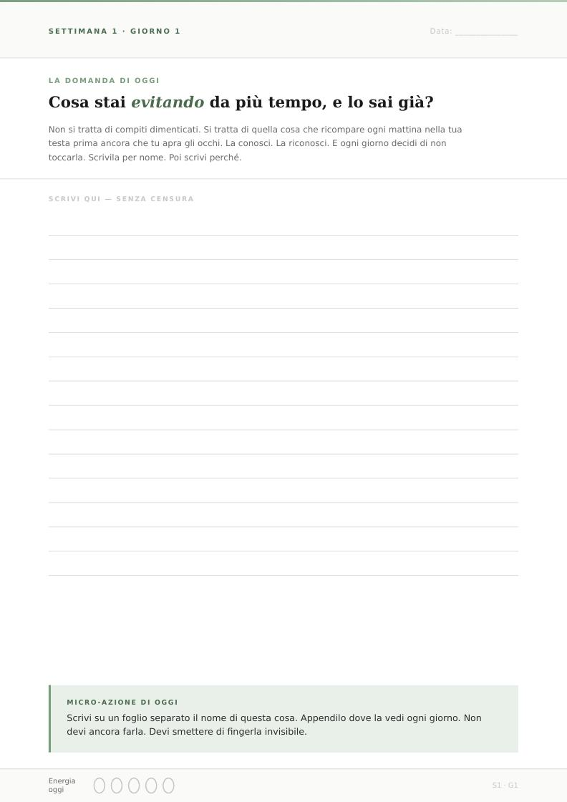
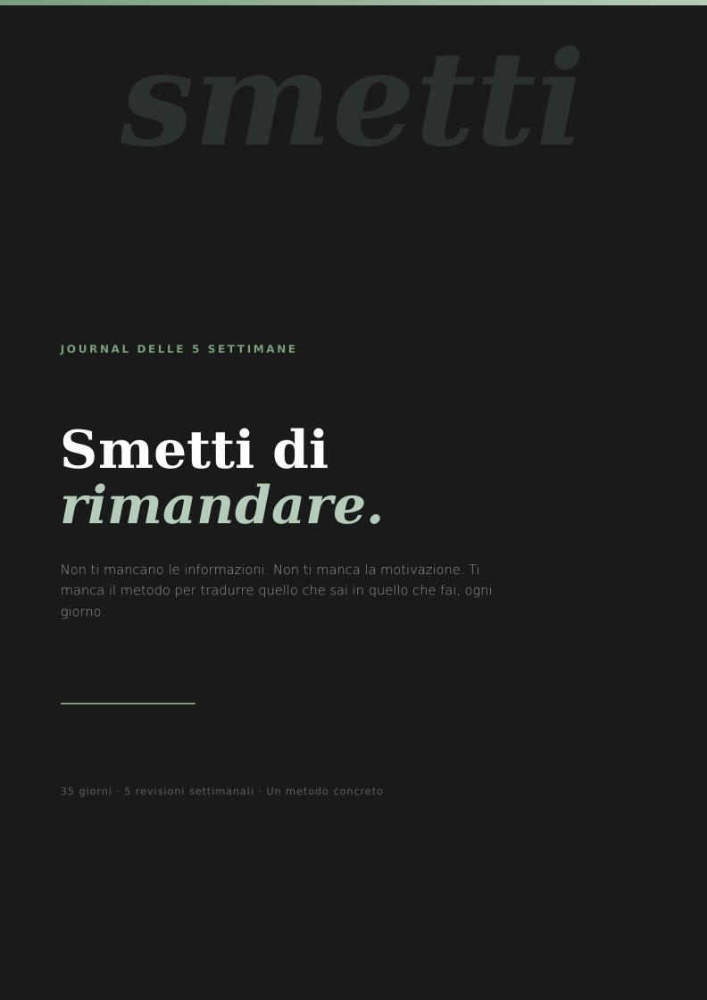

Guarda lo schema
Riconosci le scuse ricorrenti, le situazioni che ti bloccano e ciò che fai al posto di quello che rimandi.
JOURNAL DELLE 5 SETTIMANE
Dai un nome a ciò che continui a rimandare. Poi fai un passo concreto. Un journal guidato per portare nelle tue giornate quello che sai già di voler fare.


01 / IL METODO
Una domanda guidata e il suo contesto ti aiutano a mettere a fuoco ciò che eviti. Hai spazio per scrivere e una micro-azione per mettere alla prova quello che hai appena osservato.
Riconosci le scuse ricorrenti, le situazioni che ti bloccano e ciò che fai al posto di quello che rimandi.
Scrivi senza correggerti e prova l’azione proposta. Il metodo ti invita a partire da un gesto specifico e alla tua portata.
Ripercorri ciò che hai fatto, individua cosa ha retto e scegli un’intenzione concreta per il passo successivo.
02 / IL PERCORSO
Dal riconoscere ciò che eviti a scegliere cosa portare con te dopo il giorno 35.
Vai al journalGiorni 1–7. Metti a fuoco le scuse ricorrenti, il costo del rimandare e una prima scelta diversa da fare oggi.
Giorni 8–14. Osserva come ambiente e routine influenzano le tue scelte. Prepara un piano B per le giornate difficili.
Giorni 15–21. Esplora come ti parli dopo un errore, quali valori guidano le tue scelte e quali azioni mostrano che qualcosa si sta muovendo.
Giorni 22–28. Lavora sulla continuità quando cala l’entusiasmo. Osserva stanchezza, confronto e cosa ti restituisce energia.
Giorni 29–35. Scegli una regola personale, definisci il prossimo obiettivo e chiudi con una lettera a te stessa.
03 / DENTRO IL JOURNAL
Trovi introduzioni settimanali, domande con contesto e spazio per scrivere, micro-azioni e un campo per annotare l’energia del giorno. Le revisioni includono uno spazio per riconoscere gli schemi ricorrenti e scegliere un’intenzione. Il percorso si chiude con una revisione finale e un impegno da portare con te.
04 / IL JOURNAL
Scegli una cosa che continui a rimandare. Il primo giorno ti invita a scriverla per nome.
Journal delle 5 settimane
Checkout [da configurare]
Guarda le pagine del journal05 / FAQ
Leggi la domanda e il contesto, scrivi la tua risposta e svolgi la micro-azione proposta. A fine settimana torna sulle tue risposte con la pagina di revisione.
La seconda settimana ti invita a definire una regola per riprendere dopo un giorno saltato e un piano B per le giornate difficili.
Scrivi una lettera a te stessa, rivedi l’intero percorso e scegli l’impegno da portare avanti.
Sì. Nell’anteprima puoi aprire la copertina, la prima pagina di esercizio e la prima revisione settimanale.